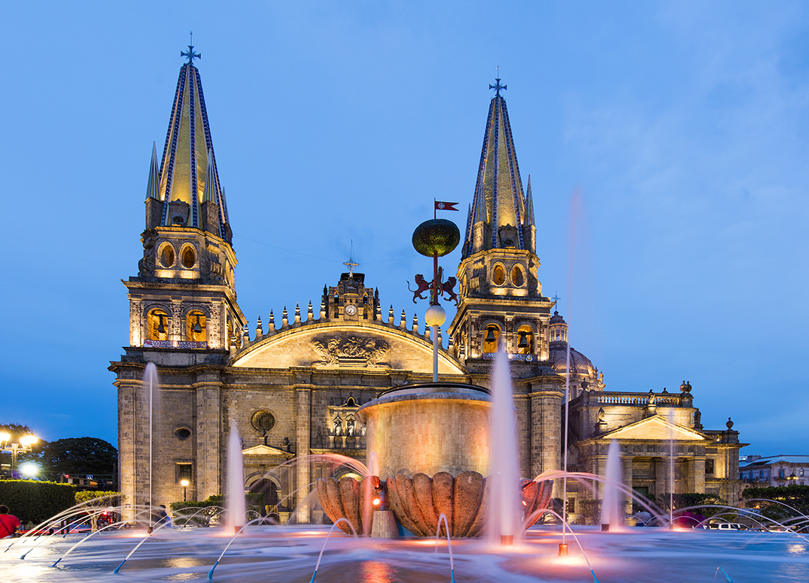
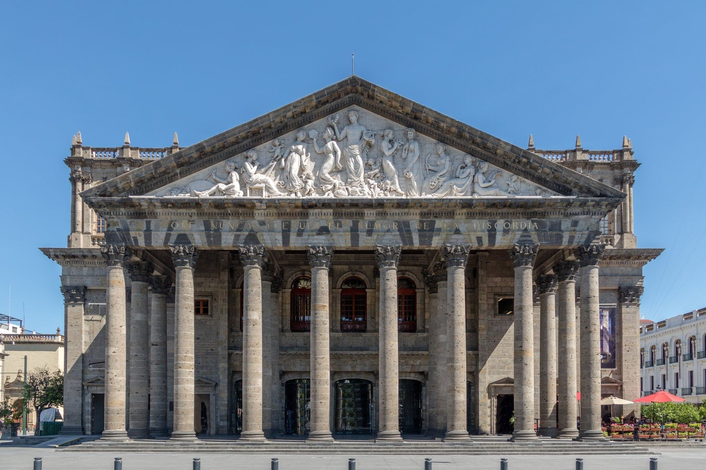
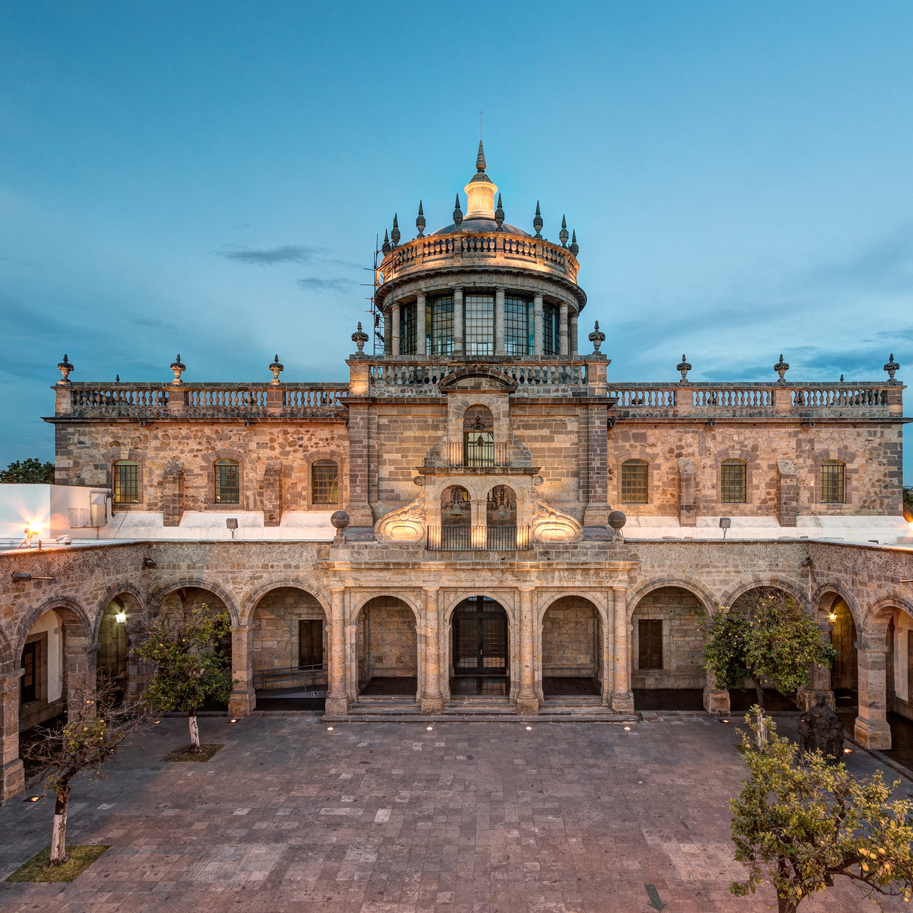
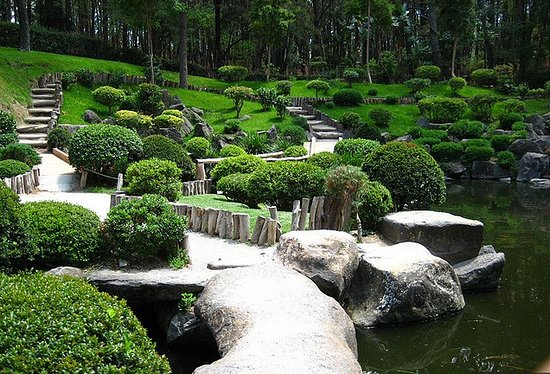
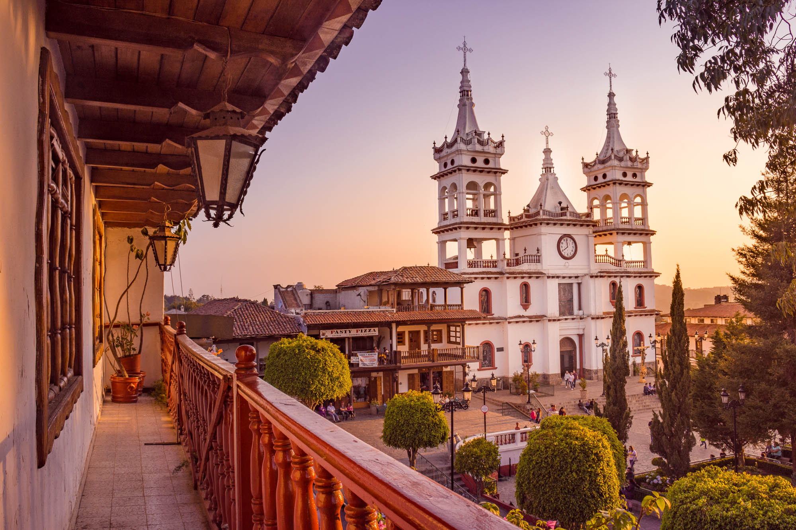
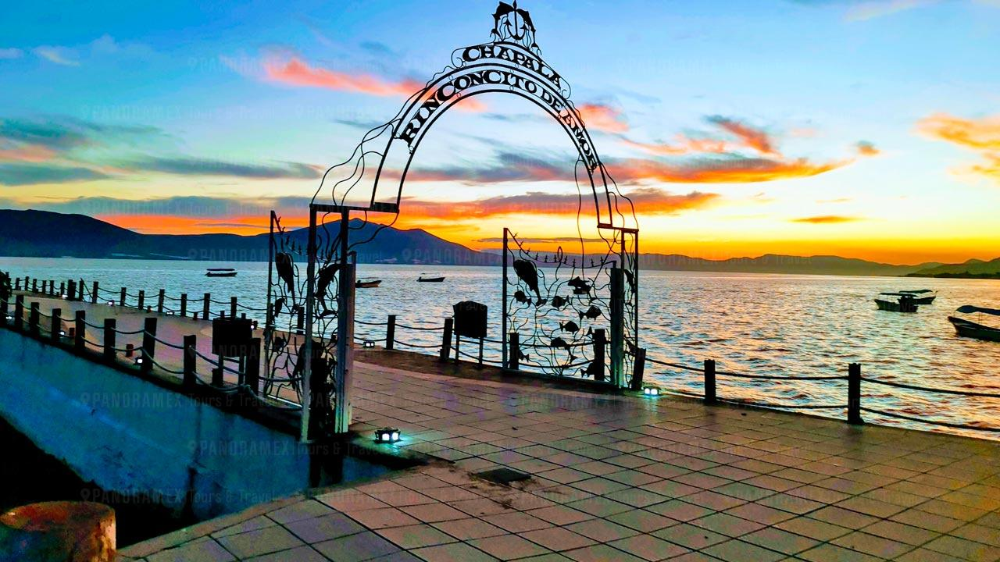
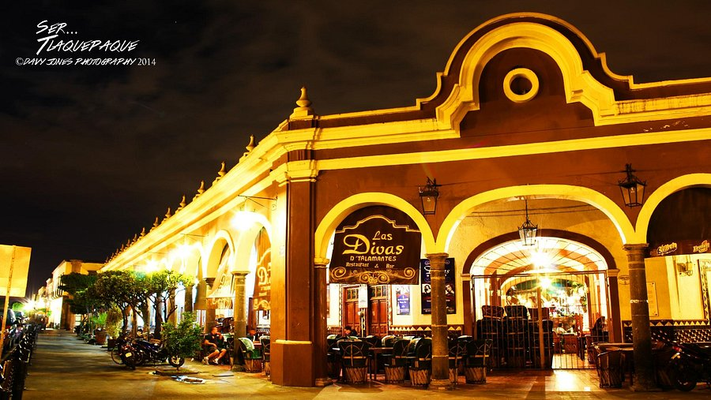
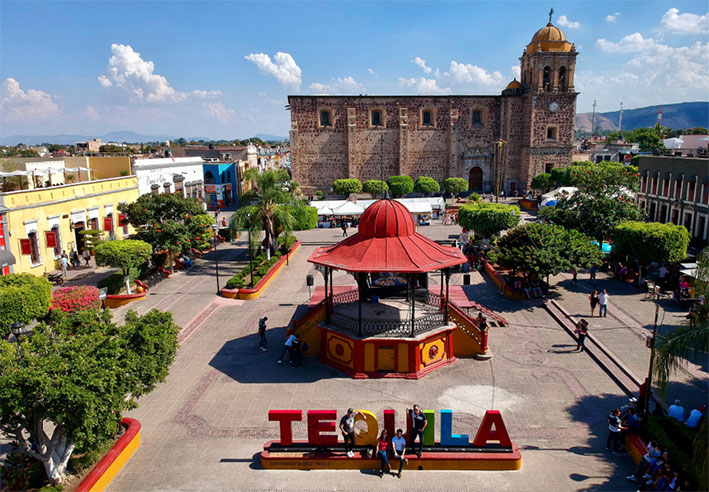
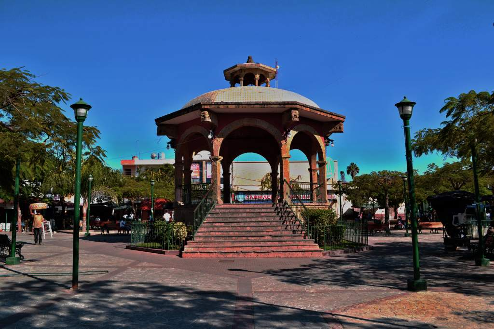

Jalisco · México
Lugares que definen nuestra región
Centro Histórico

Construida entre 1558 y 1618, sus torres neogóticas amarillas son reconocibles en todo México. Alberga obras de Murillo y retablos dorados que narran siglos de historia.

Joya neoclásica inspirada en el Teatro alla Scala de Milán. Su techo pintado por Gerardo Suárez representa el Canto IV del Infierno de Dante.

Patrimonio de la Humanidad desde 1997. Alberga los impresionantes murales de Orozco, incluyendo "El Hombre de Fuego" en su cúpula.
Naturaleza y Tradición

Oasis de 92 hectáreas con jardín japonés auténtico, estanques koi, cascadas y eucaliptos centenarios en el corazón de la ciudad.

"La Suiza Mexicana" a 2,200 m de altura. Cabañas alpinas, bosques de pino, tirolesas y rutas de senderismo a 2 horas de la ciudad.

El lago natural más grande de México con 1,100 km². Atardeceres espectaculares, comunidad internacional vibrante y clima primaveral todo el año.
Arte y Artesanía

Galería a cielo abierto con vidrio soplado, cerámica y muebles coloniales. El Parián es el epicentro del mariachi y el tequila tapatío.

Cuna del tequila. Paisajes agaveros únicos en el mundo. Destilerías centenarias, catas profesionales y el Tren José Cuervo Express.

La capital artesanal de Jalisco. Más de 7,000 familias crean cerámica, vidrio soplado y textiles que México exporta al mundo.
Continúa explorando Guadalajara